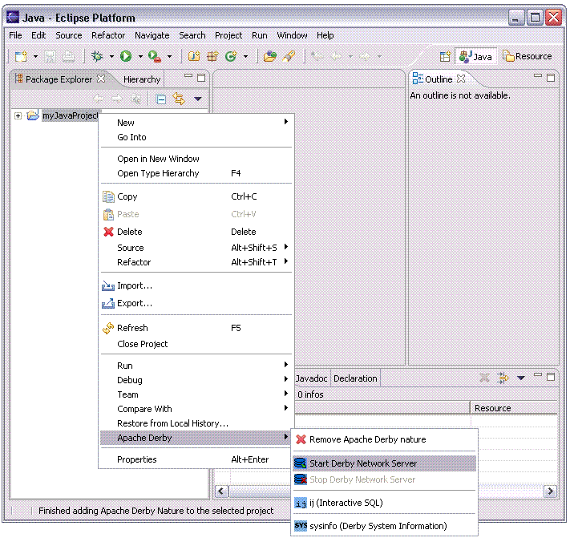
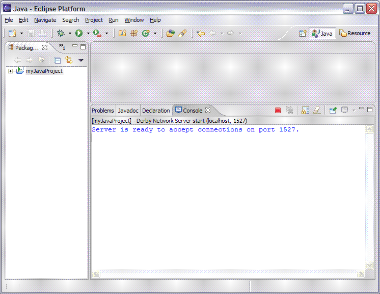

The Derby Network Server allows multiple applications running in different Java Virtual Machines to access a single Derby database. Once the Network Server is started client applications from within Eclipse, such as ij or other Java applications, can access a Derby database. Additionally, the Network Server allows for client applications outside of Eclipse on the localhost, or even on remote hosts to access the same database.


By starting the Derby Network Server using the default values the server runs on the localhost, which is the host running Eclipse, on port 1527. To change the host name or the port number where the Derby Network Server is running see Setting Derby properties for a project.
The value used for the Network Server host name impacts the ability of remote hosts to connect to the Network Server. If the Network Server Host value in the Project Properties is set to localhost, only clients running on the host where Eclipse is running can connect to the network server. If an ip address or hostname (other than the name 'localhost') is used, client applications running on other hosts can connect to the Derby Network Server. For additional information about starting the Derby Network Server see the Derby Server and Administration Guide. The section called Starting the Network Server explains the effect of setting the value for the hostname differently.
If connections from other hosts will be allowed, it is recommended to run under the Java security manager and enable user authentication prior to starting the Derby Network Server.